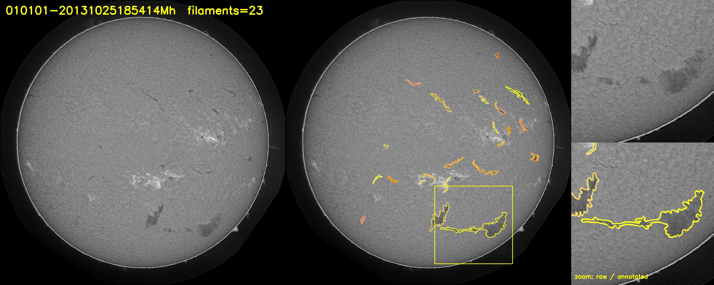
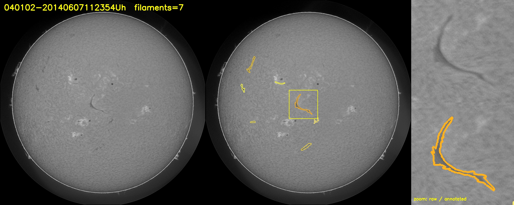

太陽暗絲分割：比賽、方法、進度一次看懂
這一頁寫給你（machen）看：比賽到底要做什麼、我們的程式怎麼運作、每個設計背後的量測依據、這一輪五位 agent 審查出了什麼、改了什麼，以及接下來你要在 Kaggle 做的事。更新時間：2026-11-04。
00現在在哪
01比賽在考什麼
任務：把每一條暗絲各自圈出來
GONG 天文台網路拍下太陽的 H-alpha 影像（2048×2048、灰階 JPEG）。太陽盤面上有一些細長的深色條紋，叫做暗絲（filament），是懸浮在太陽表面上方比較冷的物質。比賽要我們對 180 張測試影像，為每一條暗絲各輸出一個獨立的遮罩（哪幾個像素屬於它）。
生活比喻：一盤麵倒在桌上，不是問「桌上哪裡有麵」，而是要把每一根麵條分別描出來。兩根麵條靠在一起被你畫成一根會扣分，一根被你斷成兩段也會扣分。
評分：Panoptic Quality（PQ）
- IoU（交集 ÷ 聯集）：我們畫的和答案重疊多少。重疊超過一半（> 0.5）才算配對成功（TP）。
- FP：我們畫了、答案沒有的（誤報）。FN：答案有、我們沒畫到的（漏掉）。
- 配對靠實際重疊，不看編號順序。一條暗絲被切成好幾段（一對多）或兩條被併成一條（多對一），都會被扣，而且主辦方會另外統計這兩種比例。
| 項目 | 值 | 說明 |
|---|---|---|
| TP | 11 | 11 條都和答案重疊 100%，IoU 各為 1.0 |
| FP / FN | 0 / 1 | 沒有誤報，漏了一條 |
| PQ | 11 ÷ 11.5 = 0.9565 | 我們的測試程式算出一樣的數字 |
為什麼標註員互比只有 0.352？因為暗絲邊界本來就模糊，兩位專家對同一張圖畫出的遮罩中位數只有 47% 重疊，而且有三分之一的暗絲只有一位專家標。這表示 0.35 左右已經是「和專家一樣好」，不是模型很差。
總評分與獎金
- 量化 70%：PQ 排名，加上 Dice、IoU 分布、一對多與多對一比例。
- 質化 30%：流程說明、預測結果的外觀、程式碼品質（模組化與文件）。這 30% 是這一輪審查特別補強的。
- 獎金最多 3,000 美元，前三名依分數平方分配；須能收美國銀行匯款。
規則重點
- 每天最多提交 5 次，截止前要勾選最多 2 個作為最終成績。
- 可以用預訓練模型與外部資料；推論時只能用 test 資料夾的影像。
- 可以用 AI 輔助寫程式，但得獎者必須能解釋、重現每個主要部分，否則可能失去資格。所以這一頁和 README 都在幫你能講清楚每一步。
- 想爭取獎金要另外交：4 頁技術報告（官方 Overleaf 模板）＋ 公開 Git repo（含版本固定的 requirements.txt、能跑完整流程的 notebook、模型權重）。見 第 11 節。
02資料長什麼樣
- 檔名格式
YYYYMMDDHHMMSSII，最後兩碼是天文台（6 個站：Lh、Ch、Mh、Bh、Th、Uh，數量平均）。測試集的站別和年份分布與訓練集相同，沒有偏移。 - 標註是沿暗絲邊緣畫的多邊形（COCO 格式）。另附脊線 spine、外框 bbox、類別（Left / Right / Unidentifiable / Ambiguous），比賽只看遮罩不看類別。
- 暗絲很細：最寬處的寬度中位數 15.6 px，最細的 5% 只有 8 px（縮到 1024 後分別是 7.8 px 和 4 px）。暗絲像素只佔全圖 0.37%。盤面外是純黑（0），約佔兩成像素。
- 暗絲比周圍只暗約 12%，對比很低，這是題目難的地方。
- 同一張圖有 2 位標註員的 145 張、3 位的 151 張；兩位標註員的聯集遮罩 IoU 中位數 0.47，59% 的配對不到 0.5。


03方法：從一張圖到一列列 RLE
影像id_流水號,RLE 的一列。寫完立刻用主辦方的讀法（pandas 預設）讀回來比對。訓練怎麼做
- 資料切分：15% 的檔案留作驗證集（106 張、170 組標註），以拍攝日期分組：同一天不同站拍的照片會一起在訓練或驗證，避免「同一顆太陽同一分鐘」的近重複洩漏。
- 目標：每張圖一筆，標籤是該圖所有標註員遮罩的平均（0、1/3、1/2、2/3、1），縮到 1024 時保留面積比例不二值化。
- 損失：BCE（逐像素）＋ soft Dice（整體重疊），對付暗絲只佔 0.37% 的極度不平衡。
- 最佳化：AdamW、學習率 3e-4、OneCycle 排程、40 個 epoch、batch 4、混合精度（AMP）。
- 增強：旋轉／翻轉 8 種，加上亮度、偏移、gamma 抖動（模擬不同站點、不同天氣），盤面外的純黑背景保持為 0。
- 選模型：每 5 個 epoch（最後 10 個每 2 個）在驗證集算 PQ，門檻試 0.3～0.6 取最好，存最佳權重 best.pt 和最後權重 last.pt。
- 調參：訓練完用 8 向 TTA 算一次驗證集機率圖，對 thr（4 個值）× min_area（5 個）× link_px（3 個）共 60 組算 PQ，取最高。
04設計決策與量測依據
每個決定都有一個對應的數字；這些數字可以用 scripts/measure_filaments.py 和 scripts/annotator_agreement.py 重算。
| 決策 | 怎麼做 | 量測依據 |
|---|---|---|
| 解析度 1024 | 訓練與推論都在 1024² | 最寬處中位數 15.6 px、最細 5% 為 8 px；縮到 512 時最細的只剩 2 px。1024 下沒有任何暗絲消失或斷裂（50 組 325 條實測）。 |
| 軟標籤 | 縮圖後保留面積比例，不做 ≥0.5 二值化 | 神諭實驗（把正確答案當完美預測走一遍管線）：硬二值化上限 PQ 0.899；軟標籤＋三次插值上限 0.991（1536 時 0.949 / 0.998）。 |
| 三次插值放大 | INTER_CUBIC 取代 INTER_LINEAR | 軟機率圖下：線性 0.975 vs 三次 0.991；二值圖下兩者一樣，所以要和軟標籤一起用。 |
| 每張圖一筆、標註員平均 | 不再把 3 位標註員當 3 筆不同答案 | 兩位標註員遮罩 IoU 中位數 0.47；原做法讓多人標的圖權重 2～3 倍且標籤互相矛盾。留一法實驗顯示合併規則不影響上限（0.33～0.35），所以依訊號品質選平均。 |
| min_area 網格 50～300 | 原本 100～800 | 真實暗絲面積 p1 = 209、p5 = 317 px；min_area 400 會直接丟掉 8% 的真暗絲、800 丟掉 31%（神諭 PQ 掉到 0.82）。 |
| link_px 保留 0 | 網格 0 / 3 / 6 | 同一組標註裡 342 對暗絲沒有任何一對相碰；膨脹反而會把鄰居併在一起（link 10 讓神諭 PQ 掉 1.8 點）。只在模型把暗絲切碎時才有用。 |
| 8 向 TTA | 原本 4 種翻轉 | 訓練增強已涵蓋 8 種對稱，推論只用一半不一致；成本是推論時間 2 倍（180 張約幾分鐘），合理。 |
| 以日期分組切分 | YYYYMMDD 同一天同一側 | 舊切法有 2 張驗證圖在訓練集有同一分鐘別站拍的孿生圖（影像相關 0.97）。新切法 0 張同日重疊，檔案數仍是 601 / 106。 |
| 以門檻擇優選模型 | 每次驗證試 0.3～0.6 | 軟標籤會讓機率往 0.5 靠，固定 0.5 排名會失真。多算 3 個門檻只需幾秒。 |
| fp16 權重 | 存 47～49 MB | fp32 是 93 MB，GitHub 單檔上限 100 MB、50 MB 起警告；fp16 載回去再轉 fp32，推論結果相同。 |
05這一輪：五位 agent 平行審查
你要求派多個 agent 仔細審視再拿出最好成果。我把程式切成五個互不相干的面向，各派一位 agent 讀碼、寫實驗腳本、跑數據，只回報不改檔，由我統一整合，避免互相覆蓋。每位的回報都附證據（數字或原始碼行號）。
| 面向 | 主要發現 | 嚴重度 | 處理 |
|---|---|---|---|
| 評分指標與提交格式 | 拿到主辦方自我評估 notebook 原始碼，逐字對照：IoU 門檻（嚴格 >0.5）、FP/FN 計法、整體加總、空影像處理、RLE 解碼、filament_id 解析（第一個底線切）全部相同；40 張圖實測 TP/FP/FN/PQ 到小數第 6 位一致。資料裡 8,199 筆標註都是單一多邊形，無遺漏；主辦方的 area 欄位和 pycocotools 光柵化完全相等。 | 無阻斷 | 加固：RLE 形狀錯誤改丟例外、載入標註檢查格式、零面積標註算 FN、提交檔用 pandas 讀回驗證。 |
| 資料與訓練流程 | 多標註員當不同答案造成矛盾與加權不均（should-fix）；1024 不會丟實例但邊界損失約 10%；smp 單通道處理正確；autocast 下 loss 安全但脆弱；DataLoader worker 種子其實沒問題；切分有 2 張近重複洩漏；RAM 約 2.2 GB、T4 全程估 1～1.7 小時。 | 應修 | 改成每檔一筆軟標籤；loss 先轉 fp32；日期分組切分；門檻擇優選模型；亮度抖動範圍調整、背景保持黑。 |
| 後處理與推論 | 連通元件程式正確（合成測試通過）。神諭實驗找到最大改善點：硬二值化上限 0.899 → 軟標籤＋三次插值 0.991。舊版每個實例配一張 2048² 全圖，雜訊圖 387 個碎片時一次 2.7 秒、網格搜尋要 5 小時，3,000 個碎片直接記憶體不足（我在本機重現：5,811 個碎片時舊版當掉，新版 47 毫秒）。 | 會當掉 | 後處理改成向量化標籤圖（結果與舊版逐像素相同）；網格改 4×5×3；三次插值；8 向 TTA。 |
| Kaggle notebook 能否跑完 | notebook 與原始碼同步；確認這是上傳 CSV 的一般賽（不是 code competition）；資料夾結構與下載版相同；smp 在 Kaggle 沒預裝，需 Internet On，而 GPU 與 Internet 都要手機驚證；忘了選 GPU 會在 CPU 上默默跑到超時；缺少不用重訓的推論路徑；輸出緩衝讓前 5 分鐘看不到任何訊息。 | 應修 | 加 GPU 檢查 cell、固定套件版本、python -u、MODE 切換 train/predict、結果摘要 cell、cell id、環境版本寫檔。 |
| 程式碼品質與交付物 | 模組切分本身良好；但缺 requirements.txt、README、LICENSE、.gitignore、權重與不重訓推論（這些是規則硬性要求）；train.py 110 行單一函式；魔術數字重複三處；測試是模組層級的腳本不是 pytest；一個未用 import；walkthrough 有 6 處敘述過頭或不可重現。 | 缺交付物 | train.py 拆成函式；PostprocessParams 資料類；新 submission 模組；補齊六個交付檔；pytest 測試；分析腳本；本頁重寫。 |
06這一輪改了什麼（前 → 後）
| 檔案 | 之前 | 之後 | 為什麼 |
|---|---|---|---|
filament/dataset.py | 每組標註一筆；遮罩縮小後 ≥0.5 二值化 | 每張圖一筆；目標 = 標註員平均，保留面積比例（軟標籤）；背景保持黑 | 上限 0.899 → 0.991；去除矛盾標籤與不均加權 |
filament/postprocess.py | 每個實例配一張 2048² 全圖 | 單一標籤圖＋查表；PostprocessParams、DEFAULT_GRID | 雜訊圖從當掉變 47 ms；參數不再散落三處 |
filament/inference.py | 4 種翻轉；線性放大 | 8 向 D4 對稱（可選）；三次插值；輸出夾到 [0,1] | 和訓練增強一致；保留軟邊界 |
filament/data.py | 照檔名隨機切；segmentation[0] 不檢查 | 以日期分組切；格式檢查；Kaggle 路徑直達；常數集中 | 去除近重複洩漏；日後格式變動會大聲失敗 |
filament/metric.py | 零面積標註會被跳過 | 保留為 FN；文件註明與主辦方對照結果 | 和主辦方行為一致 |
filament/model.py | 只有模型與 loss | loss 先轉 fp32；save_weights / load_weights（fp16＋sidecar JSON） | 權重可進 repo、不靠命令列預設值重建 |
filament/submission.py | （寫在 train.py 裡，用 assert） | 獨立模組：寫檔、用 pandas 讀回、檢查 id 唯一與前綴 | 推論模式可重用；用主辦方的讀法驗證 |
train.py | 一個 110 行 main | Validator、train_model、tune_postprocess、predict_test；--predict-only --weights --postprocess、--seed；輸出 postprocess.json、environment.json | 規則要求不重訓即可重現；質化 30% 看模組化 |
build_notebook.py | 15 cell，無 GPU 檢查，套件不固定版本 | 19 cell：MODE 切換、GPU assert、版本固定、-u、結果摘要、cell id | 忘選 GPU 會立刻停下而不是跑 9 小時 |
tests/、scripts/ | 一個需要資料的腳本 | pytest 風格、無資料也能跑的合成測試；三個分析腳本重算報告數字 | 評審能 1 秒跑完測試；數字可重現 |
| repo 根目錄 | 無 | README.md、requirements.txt、requirements-dev.txt、LICENSE（MIT）、.gitignore、pyproject.toml | 規則硬性要求 |
07驗證了什麼、還沒驗證什麼
已驗證
- PQ 與主辦方 notebook 程式逐字對照、40 張圖數值一致。
- RLE 無損來回（400 張真實遮罩、含反斜線的字串、pandas 讀回）。
- 新後處理與舊版在 6 張圖 × 4 組參數下分出的實例完全相同。
- 8 向 TTA 的 8 個正反變換都能還原原圖。
- 日期分組切分：0 個同日重疊，601 / 106 個檔案。
- CPU 冒煙測試：訓練模式與 predict-only 模式都從頭跑到提交檔並通過讀回驗證。
- notebook 的 10 個程式 cell 與原始檔逐字相同。
- 神諭實驗數字（0.899 / 0.991 等）由兩位 agent 各自用真實資料實測，並由 scripts/measure_filaments.py 重算。
尚未驗證
- 真正的訓練：本機沒有 GPU，分數、訓練時間、VRAM 用量（估 6～9 GB）都還是估計。
- 軟標籤對模型的實際增益：神諭上限是 0.99，模型做不到完美，實際增益會小於上限差距。
- 主辦方在排行榜上額外的「邊界情況檢查」內容。
- Kaggle 介面操作步驟中標示「不確定」的部分。
- 隱藏測試集的答案是怎麼合併多位標註員的。
08風險與已知弱點
| 風險 | 影響 | 對策 |
|---|---|---|
| 1024 解析度的邊界損失 | 就算模型完美也會先掉一些 IoU（軟標籤後已大幅縮小） | 若時間夠，試 --size 1536 --bs 2（算力 2.25 倍，上限 0.9985） |
| 模型把相鄰暗絲連成一條（多對一） | 兩條都變 FN，再加一個 FP | 先在驗證集量「一個預測蓋到多個答案」的比例，再決定是否做分水嶺／脊線分割 |
| 沒有訓練中斷續跑 | Kaggle session 斷掉要從頭（約 2 小時） | 用 Save & Run All（Commit）在背景跑；全程遠低於 9 小時上限 |
| Kaggle 帳號沒做手機驗證 | 不能開 GPU 也不能開 Internet，notebook 第一格就會失敗 | 先到 Settings 完成 Phone Verification |
| 單一模型、無集成 | 分數有上升空間 | 基準先交出去拿到真實分數，再決定投入 |
| 影像沒有任何預測 | 該圖所有答案都是 FN；每張訓練圖都至少有 1 條暗絲 | train.py 會印出空影像清單；若不為 0 可考慮用較低門檻保留最大元件 |
09檔案地圖
| 路徑 | 內容 |
|---|---|
filament/data.py | 讀 COCO 標註、光柵化多邊形、以日期分組切分、路徑常數 |
filament/dataset.py | PyTorch 資料集：每檔一筆、軟標籤、增強、正規化 |
filament/model.py | U-Net 建構、BCE+Dice 損失、權重存取（fp16＋JSON） |
filament/inference.py | 縮圖推論、8 向 TTA、三次插值放大 |
filament/postprocess.py | 機率圖 → 標籤圖 → 實例；PostprocessParams、DEFAULT_GRID |
filament/metric.py | PQ（參考版與快速標籤圖版），已與主辦方對照 |
filament/rle.py | COCO RLE 編碼／解碼 |
filament/submission.py | 寫 submission.csv 並用 pandas 讀回驗證 |
train.py | 訓練 → 調參 → 提交；--smoke、--predict-only |
build_notebook.py → kaggle_baseline.ipynb | 打包成 Kaggle notebook（19 cell） |
tests/test_core.py | pytest 風格測試，無資料也能跑合成測試 |
scripts/ | visualize.py（視覺化）、annotator_agreement.py（0.352）、measure_filaments.py（寬度、面積、神諭上限） |
README.md、requirements*.txt、LICENSE、.gitignore、pyproject.toml | repo 交付物（英文） |
viz/ | 4 張資料視覺化圖 |
比賽重點_Kaggle官方.md、kaggle_pages/ | 官方頁面整理與原文 |
對話紀錄.md | 每一輪做了什麼 |
walkthrough.html | 本頁 |
data/（不進 repo） | 比賽資料，CC BY-NC 4.0，不可再散布 |
10下一步：把 notebook 丟上 Kaggle 跑一次
這一步只有你能做（要登入你的帳號）。全程約 2 小時，大部分時間是等待。標示【不確定】的地方是 Kaggle 介面可能略有不同，請以畫面上最接近的選項為準。
事前準備（只做一次）
- 登入 Kaggle，到比賽頁 filament-segmentation-2026，確認已 Join Competition 並接受規則。
- 手機驗證：右上頭像 → Settings → Phone Verification → 輸入手機收簡訊。沒做這步就不能開 GPU 和 Internet。
建立 notebook
- 比賽頁上方 Code 分頁 → New Notebook。
- 左上 File → Import Notebook → Upload → 選
C:\Users\machen\Desktop\SegmenThreads\kaggle_baseline.ipynb。【不確定：有些版本直接彈出上傳框】 - 右側 Input 應已掛好
filament-segmentation-2026；若沒有，+ Add Input → Competitions 分頁 → 找這個比賽按 +。程式會自己找資料夾，不用改路徑。
設定
- 右側 Settings → Accelerator：選 GPU T4 x2 或 GPU P100（程式只用一張卡，兩者都可）。
- Internet：切到 On（為了 pip install 和下載 ImageNet 預訓練權重）。
- 第一個程式 cell 的
MODE = 'train'保持不動。
執行（建議方式 B）
- A. Run All：互動執行，可即時看輸出；但關掉瀏覽器一段時間後 session 可能被停掉，輸出檔會消失。適合先跑前 3 格確認 pip 成功、看得到 GPU 名稱。
- B. Save Version → Save & Run All (Commit)：Kaggle 在背景從頭跑整本，可以關瀏覽器，跑完輸出永久留在該版本。右下／左下的 View Active Events 可看進度。
{'epoch': 1, 'loss': ...}，每 5 個 epoch 多印 PQ。若第一格出現紅字，99% 是 Internet 沒開或沒手機驗證。判斷成功
- 最後幾格會印：
rows=N images with >=1 filament=180/180 (empty=0)、環境版本、選到的後處理參數、驗證 PQ、訓練紀錄表、網格前 10 名。 - 成功的樣子：180 張都有預測、驗證 PQ 明顯大於 0（基準模型 0.3～0.5 都合理，標註員互比是 0.35）。
下載與提交
- notebook 頁 → Output 分頁 →
outputs/→ 下載submission.csv。同時下載best.pt、best.pt.json、postprocess.json、report.json、environment.json，放到專案的weights/資料夾，這是最終交件要用的。 - 比賽頁 → Submit Prediction → 拖入 submission.csv → 填一句描述（例如
unet-r34 1024 soft e40）→ Submit。幾分鐘後在 My Submissions 看到 Public Score。 - 每天最多 5 次。截止前到 My Submissions 勾選最多 2 個作為最終成績。
跑完後把 report.json 和 environment.json 給我：我會把真實的驗證 PQ、訓練曲線、Kaggle 的套件版本填進 README 和 requirements.txt，並和排行榜分數對照。
1111/15 前要交的東西
| 項目 | 狀態 | 說明 |
|---|---|---|
| Kaggle 提交（submission.csv） | 待跑 | 第 10 節 |
| 公開 Git repo | 待建 | 本機還不是 git repo。.gitignore 已排除 data/ 與 outputs/。需要你決定 GitHub 帳號與 repo 名稱，我可以代跑 git init、commit，push 需要你的登入。 |
| requirements.txt（版本固定） | 草稿 | 目前是本機已知可用版本；Kaggle 跑完後用 environment.json 的版本取代。 |
| 能跑完整流程的 notebook | 完成 | kaggle_baseline.ipynb，MODE=train / predict。 |
| 模型權重在 repo 中、不重訓可重現 | 待跑 | train.py 已輸出 fp16 權重（約 49 MB）＋ postprocess.json；跑完放進 weights/ 並用 --predict-only 驗證一次。 |
| 4 頁技術報告（PDF，官方 Overleaf 模板） | 未開始 | 內容來源：本頁第 3～5 節與 scripts 的量測數字。建議拿到真實分數後再寫。 |
| Google 表單送出 | 未開始 | 連結在官方 Overview 頁；11/15 23:59 CDT 前。 |
| LICENSE（MIT） | 完成 | 規則要求 OSI 授權且不得限制商業使用；資料本身是 CC BY-NC 4.0，不放進 repo。若你偏好 Apache-2.0 告訴我。 |
1212 輪經過（2026-11-04 一天內）
13名詞小辭典
- 暗絲（filament）
- 太陽盤面上細長的深色條紋，是比較冷的物質被磁場撐在高處，從上面看就像一條黑線。
- 實例分割（instance segmentation）
- 不只標出「哪裡是暗絲」，還要分清楚「這是第 1 條、那是第 2 條」。像數一盤裡有幾根麵條，而不是量有多少麵。
- IoU
- 交集除以聯集。兩個圈圈重疊的面積 ÷ 兩個圈圈合起來的面積。完全重疊是 1，完全不碰是 0。
- PQ
- 比賽的分數。把配對成功的 IoU 加起來，除以（成功數 ＋ 一半誤報 ＋ 一半漏掉）。同時懲罰畫得不準、畫多了、畫少了。
- U-Net
- 一種做影像分割的神經網路，形狀像 U：左邊一路縮小抓大局，右邊一路放大畫細節，左右同層之間有捷徑把細節接回去。
- ResNet34 / ImageNet 預訓練
- U-Net 左半邊用的「眼睛」。它已經在一百萬張日常照片上學過辨認邊緣、紋理，我們只是教它把這些能力用在太陽上。
- epoch
- 把所有訓練影像完整看過一遍。我們看 40 遍。
- batch
- 一次同時餵給 GPU 幾張圖。我們是 4 張。
- 軟標籤（soft target）
- 答案不是只有 0 或 1，而是 0.3、0.5 這樣的「有幾成是暗絲」。來源有兩個：縮圖時一個像素涵蓋原本幾個像素的比例，以及幾位標註員中有幾位同意。
- BCE、Dice
- 兩種「答錯多少」的算法。BCE 逐像素算；Dice 看整體重疊。暗絲只佔 0.37%，只用 BCE 模型會學到「全部猜不是」就有 99.6% 正確，所以要加 Dice。
- TTA（測試時增強）
- 把同一張圖轉幾個角度、翻幾次都預測一遍，再平均。多看幾眼比較穩。
- 插值（線性／三次）
- 把小圖放大時怎麼補中間的像素。線性是直線連接，三次是平滑曲線，對「軟」的機率圖更準。
- 連通元件
- 彼此相連的一群像素。二值化後每一團就當成一條暗絲。
- 神諭實驗（oracle）
- 假設模型完美，把正確答案本身丟進管線走一遍，看會掉多少分。掉的分數就是管線本身的上限損失，和模型無關。
- RLE
- 遊程編碼。把一張 0/1 的遮罩寫成「連續 0 幾個、連續 1 幾個」的字串，比存整張圖小很多。主辦方要求的提交格式。
- 驗證集
- 從訓練資料裡留下一部分不給模型看，用來估計它在沒看過的圖上表現如何。我們留 15%，以拍攝日期分組。
- fp16 / AMP
- 用「半精度」小數計算，速度快、記憶體省一半，GPU 訓練常用。權重存成 fp16 也只要一半大小。
- smoke test（冒煙測試）
- 用很小的資料、很少的步數，把整條流程快速跑一遍，確認不會冒煙（當掉）。